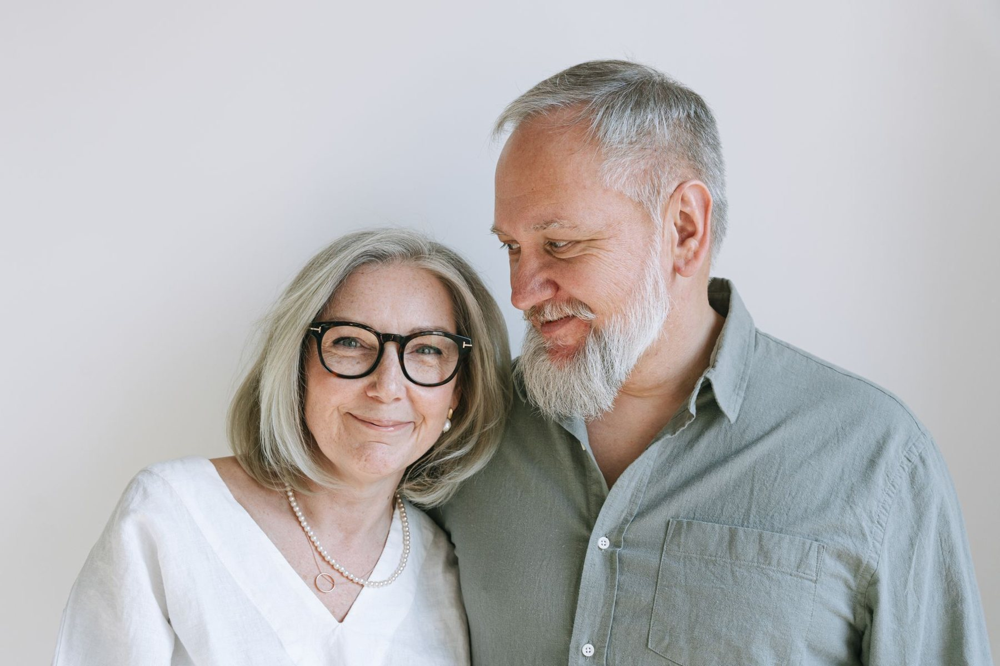
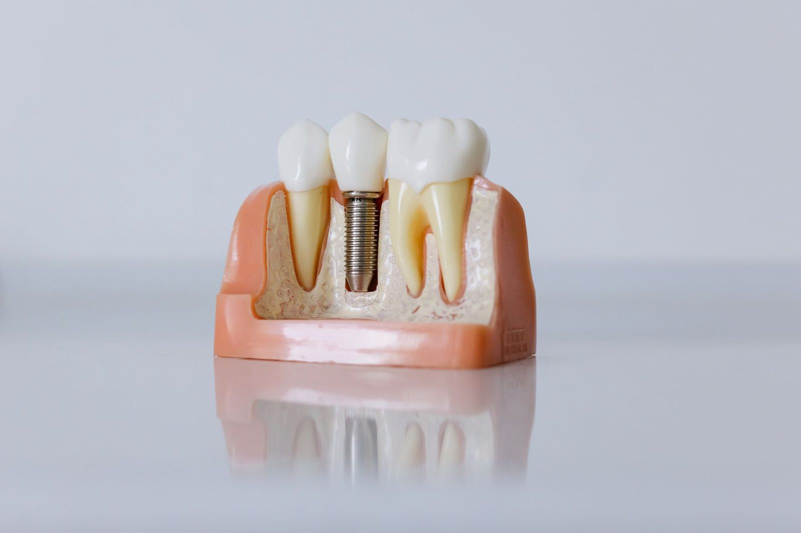
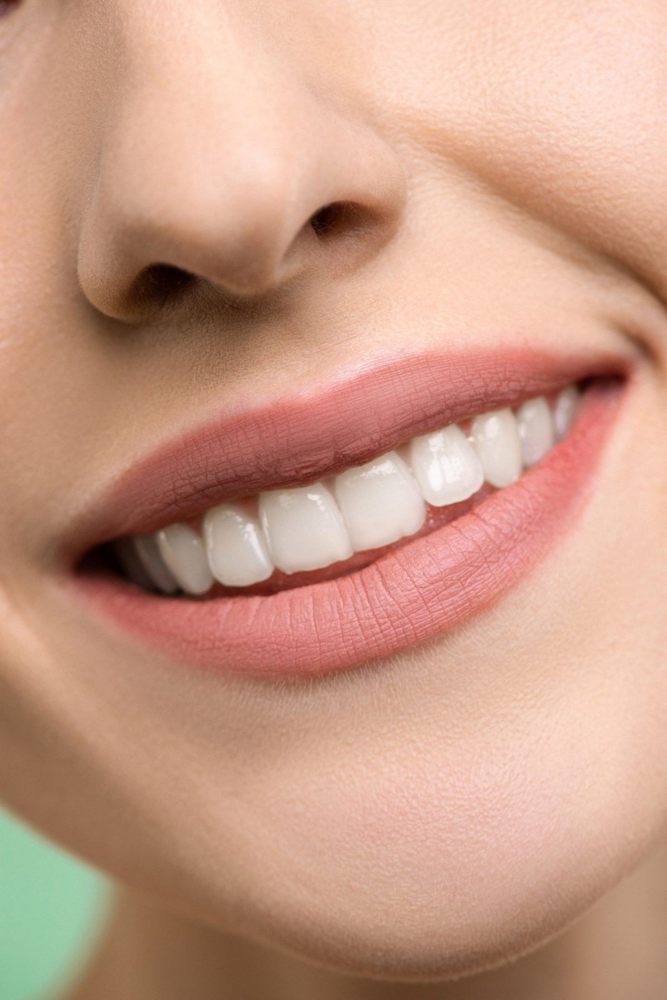
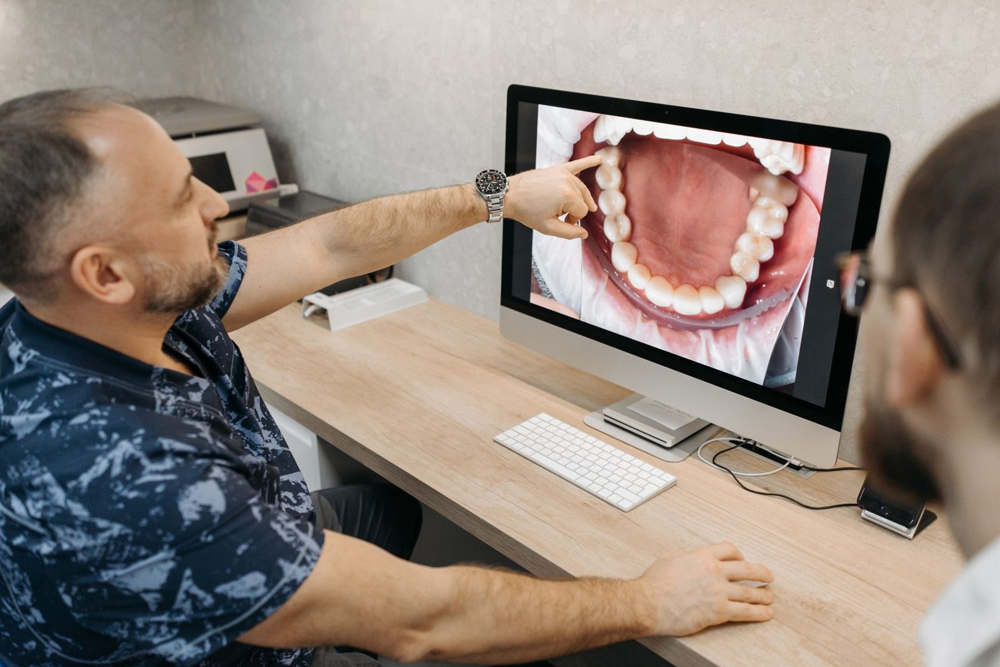
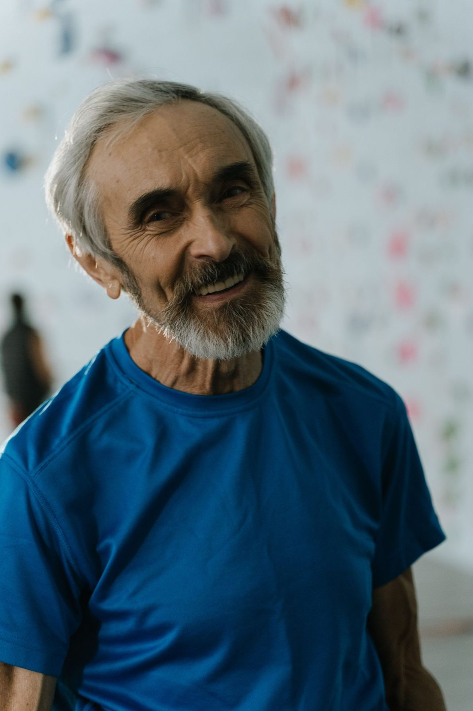
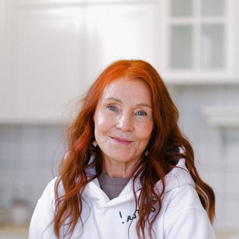

Usa prótese que solta?
Com implantes, os dentes ficam fixos e você volta a mastigar sem medo.

Implantes e lentes em Ribeirão Preto
Na primeira consulta, você faz o escaneamento 3D e sai com o plano, o prazo e o valor por escrito.
Como funciona
Da primeira conversa ao sorriso pronto, você sabe o que vem a seguir e quanto vai custar.
NÚMEROS FICTÍCIOS DE PORTFÓLIO
Com implantes, os dentes ficam fixos e você volta a mastigar sem medo.
Lentes na cor e no formato do seu rosto, sem branco artificial.
Clareamento com a cor escolhida junto com você na escala.

Repõe um dente perdido com uma raiz de titânio e uma coroa na cor dos seus dentes.
Saiba mais
Lâminas finas que corrigem cor e formato, desenhadas para o seu rosto.
Saiba maisConversa sem pressa sobre o que te incomoda.
Um scanner faz a imagem da sua boca, sem massinha.
Você vê a simulação e leva o plano, o prazo e o valor.
Com sedação consciente, se você preferir.

Quem cuida de você
“Eu explico cada etapa antes de fazer. Você nunca é pego de surpresa.”
Dra. Lívia Andrade, implantodontista, 12 anos em Ribeirão Preto.
CRO-SP 000000
Quem já passou por aqui
Eu tinha pavor de dentista. A doutora explicou cada passo antes e, com a sedação, nem vi o tempo passar.

Vi na tela como ia ficar antes de começar. As lentes ficaram com cara de dente mesmo.

Voltei a comer churrasco sem medo da prótese soltar. Melhor decisão que tomei.
Saí da avaliação com tudo por escrito: plano, prazo e valor. Nada de surpresa no meio do caminho.
Atendimento sem pressa, num sábado de manhã. Explicaram até o que eu não tinha perguntado.
Eu tinha pavor de dentista. A doutora explicou cada passo antes e, com a sedação, nem vi o tempo passar.
A cirurgia é feita com anestesia local, e você pode escolher a sedação consciente para ficar relaxado o tempo todo. Depois, o incômodo costuma ser leve e passa em poucos dias.
Depende do plano de cada pessoa. Na avaliação você recebe o valor por escrito, junto com o plano e o prazo.
Na maioria dos casos o desgaste é mínimo ou nenhum. Você vê a simulação antes e decide.
Técnica de ponta com conversa de gente. Implantes e lentes em Ribeirão Preto.